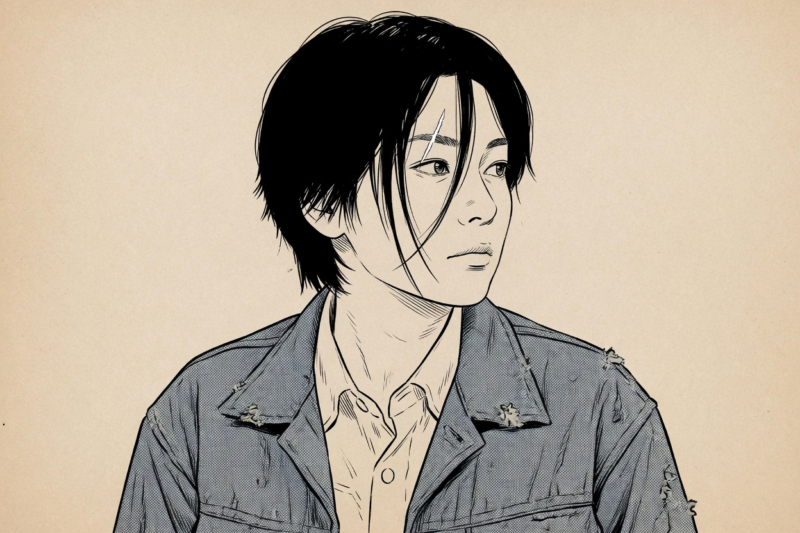

The prompting path · 02 · Craft
One face, twelve pages
Consistency is a paragraph you stop rewriting.

Models drift because each prompt is a new introduction. Describe the person differently on page two — softer one time, sharper the next — and you have asked for a different person, then blamed the tool.
Write a lock. A lock is a short paragraph you paste, unchanged, at the top of every panel prompt in the sequence. It is not a biography. It is geometry, hair as a shape, and clothes as objects.
What goes in
Use an adult age as a number or a decade. “Young” is how a drawing slides toward a teenager. Say thirty-two, or “in her early thirties,” and keep saying it.
Face, in plain words, and few of them. A scar through one eyebrow. A strand that falls over the left eye. Two or three marks are enough to hold. More than that and the model averages them away. “Beautiful” holds nothing.
Hair is a silhouette. “Short, uneven, one strand over the left eye” survives from panel to panel. A fashion name for the cut does not. It becomes a different haircut every time the model tries to be current.
Wardrobe is a list of garments, not a brand and not a costume genre. An indigo work jacket. A white shirt. The top button open. If the jacket comes off, that is a story event. Write the change. Do not quietly drop the garment and hope the face carries the person alone.
An original woman in her early thirties. Short uneven black hair, one longer strand over her left eye, a small scar through the left eyebrow. Worn indigo work jacket over a plain white shirt. Keep this face, this hair, and this jacket the same.
An original woman in her early thirties. Short uneven black hair, one longer strand over her left eye, a small scar through the left eyebrow. Worn indigo work jacket over a plain white shirt. Keep this face, this hair, and this jacket the same. She sits at a small kitchen table, medium shot, slight high angle, noon light from a window on the right. Both hands around a cup. The left third of the panel is empty table. Manga ink line, tone only on the jacket. No lettering.
What stays out
Keep the lock boring. The panel prompt under it carries the verb, the shot, and the room. The lock carries the person. When panel four looks better than panel one, you will want to “improve” the lock to match it. Don’t. You will split the character in two. Note the improvement for the next story, and finish this one with the paragraph you started with.
Do not lock a living author’s character, and do not lock an actor. Describe someone you invented. A borrowed face is not a shortcut. It is a second person the model is trying to please, and that face will not sit still either.
If you can attach a reference picture, attach the same one every time, and still paste the lock. The words say which parts of the picture are law and which parts belong to this panel. Without that, the reference is a suggestion and the new prompt is a competing suggestion.
Check the picture against the lock
Not against your mood. Strand over the left eye, or the right? Scar present? Jacket still indigo, or suddenly black leather? If the action is wrong, fix the panel prompt. Change the lock only when every panel is wrong in the same way — then change it once, and regenerate the sequence, not only the latest picture.
A lock is not a negative prompt. “Not a different person” does not say who to draw.
State the person. Then state the panel. The order matters, because the second paragraph is allowed to change and the first is not.